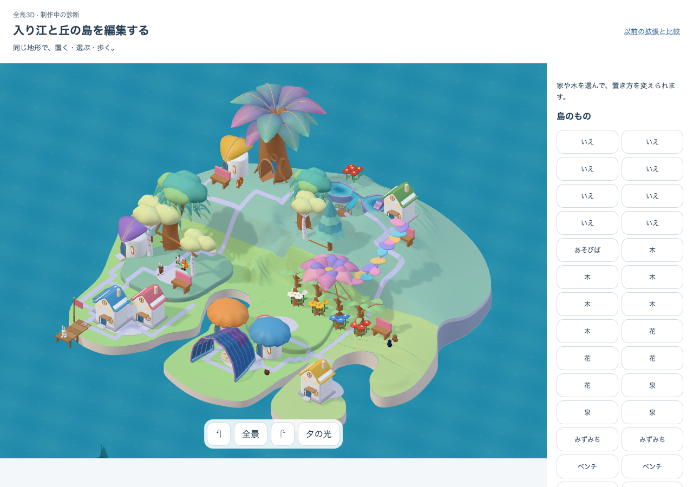

中央丘肩 c1 — 限定した実画面比較
固定成熟状態の全景と丘近景。採用原本と実appの造形を比較するための資料で、購入・成熟・編集の全旅程や小画面を含むcritical pathの完了証拠ではありません。画像の切抜き・色補正・描き足しはしていません。
作者所見：肩の3本で右側にまとまりは出たものの、森は細い個体の列に見え、中央の裸地と角張った道が目立ちます。近景では幹と根の支持は見えますが、薄い床の継ぎ目が残ります。全島美術はHOLD。独立した理解／安全はN=0、runtimeはこの2画面の限定診断のみPASSです。
 採用した到達像 · native-05 · 別構図の15軒
採用した到達像 · native-05 · 別構図の15軒
SHA256 9de26a7f8a83176df37a7848cae4beea7962eb782247d07cf7e3b970a856f9c6
fixed35-desktop-whole-day.png
SHA256 070ca145b6b32563d0ebc3032cf82684b0bf32f9ead881fb8551231ab920d3ea fixed35-desktop-hill-close-day.png
fixed35-desktop-hill-close-day.png
SHA256 7ee7d70f87758e2d45dcc8f5f26cd4bad1c427df15d8de7e666bd77de34c7caf実行の識別
{
"build": "authored-shoulder-c1",
"version": "authored-shoulder-c1:3fd164b9-6f32-4502-9ca5-dde6c5c1cbd7",
"target": "http://127.0.0.1:5358/prototypes/place-qa/authored.html?water=wide&cove=corner&shoulder=central&ground=source&reference=shoulder35",
"visualCandidate": "native05-central-shoulder-sw-v3-source-v1+source-shading-v1",
"delivery": "Explicit DEV QA; nativeGrowingArt=true in rendered telemetry. Normal build remains native=false.",
"scope": "Fixed mature 35 owners / 8 homes / 75 rights; desktop whole and hill close only.",
"fullJourneyAccepted": false,
"independentObservers": 0,
"rawReportSha256": "5479ebcf1d1ed27f4b2efcc6e5b5fb5772d9d9af6d522756b40d8b13d233e382"
}
限定診断の原記録 · 初回全旅程のメモリ不足と未実行範囲 · 保持量の分離実験